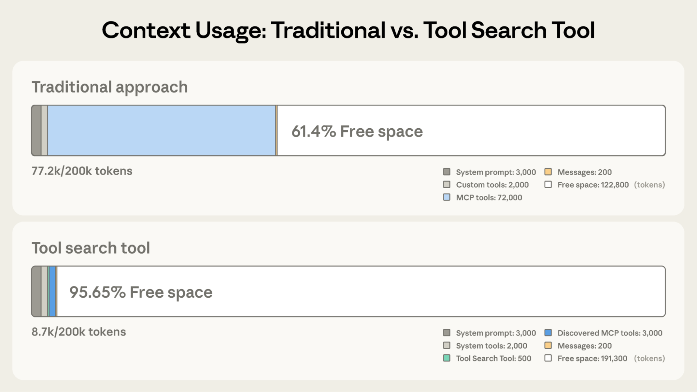

Claude 开发者平台高级 Tool Use 功能介绍
发布日期: 2025 年 11 月 24 日
概述
Anthropic 发布了三个新的 beta 功能，使 Claude 能够动态发现、学习和执行工具。这些功能旨在解决 AI 代理在处理大规模工具库时面临的核心挑战。
核心问题与解决方案
AI 代理的三个关键需求
-
无上限工具库访问：代理需要在不将每个工具定义都加载到上下文的情况下，访问数百或数千个工具
-
高效代码执行能力：相比逐个调用工具，代理应该能通过代码编排多个工具调用，避免中间结果污染上下文
-
从示例学习：代理需要从具体用法示例而非仅 JSON Schema 学习工具的正确使用方式
功能一：Tool Search Tool
问题背景
传统方法下，MCP 工具定义会大量消耗 token。以 5 服务器设置为例：
- GitHub: 35 工具 (~26K tokens)
- Slack: 11 工具 (~21K tokens)
- Sentry: 5 工具 (~3K tokens)
- Grafana: 5 工具 (~3K tokens)
- Splunk: 2 工具 (~2K tokens)
总计：58 个工具消耗约 55K tokens，加上 Jira (~17K tokens)，迅速突破 100K+ token 开销。
Anthropic 内部甚至观察到单个项目的工具定义消耗 134K tokens。
常见失败原因：工具选择错误、参数不正确（尤其是名称相似的工具，如 notification-send-user 与 notification-send-channel）
解决方案
Tool Search Tool 允许动态发现工具，仅在需要时加载相关定义。
对比效果：
| 方案 | 初始加载 | 按需加载 | 总计 | 保留上下文 |
|---|---|---|---|---|
| 传统方案 | ~72K tokens | - | ~77K tokens | 5 % |
| Tool Search Tool | ~500 tokens | ~3K tokens | ~8.7K tokens | 95 % |
Token 节省: 85 % 减少
准确度提升：
- Opus 4: 49 % → 74 %
- Opus 4.5: 79.5 % → 88.1 %
工作原理
通过 defer_loading: true 标记工具，使其可按需发现：
{
"tools": [
{"type": "tool_search_tool_regex_20251119", "name": "tool_search_tool_regex"},
{
"name": "github.createPullRequest",
"description": "Create a pull request",
"input_schema": {...},
"defer_loading": true
}
]
}
对于 MCP 服务器，可延迟加载整个服务器，同时保持常用工具加载：
{
"type": "mcp_toolset",
"mcp_server_name": "google-drive",
"default_config": {"defer_loading": true},
"configs": {
"search_files": {
"defer_loading": false
}
}
}
使用场景
推荐使用：
- 工具定义消耗 >10K tokens
- 工具选择准确性有问题
- 多服务器 MCP 系统
- 可用工具 10+ 个
不推荐：
- 工具库较小 (<10 个)
- 每个会话都使用所有工具
- 工具定义紧凑
Prompt Caching 兼容性：延迟加载工具被排除在初始 prompt 之外，系统 prompt 和核心工具定义保持可缓存性
功能二：Programmatic Tool Calling
问题背景
传统 tool calling 存在两个根本问题：
-
上下文污染：处理 10MB 日志文件时，整个文件进入上下文，尽管仅需错误频率摘要。多表数据查询时，所有记录累积在上下文中
-
推理开销：每次工具调用需要完整推理。5 个工具的工作流需要 5 次推理通过。中间数据在上下文中相互竞争
解决方案
代理通过 Python 代码编排工具，而非逐个调用。代码在沙箱环境执行，仅最终结果进入 Claude 的上下文。
效率提升：
- Token 节省: 43,588 → 27,297 tokens（37 % 减少）
- 延迟减少: 消除 19+ 次推理通过
- 准确度: 知识检索 25.6 % → 28.5 %; GIA 基准 46.5 % → 51.2 %
实现步骤
第一步：标记工具为代码可调用
{
"tools": [
{
"type": "code_execution_20250825",
"name": "code_execution"
},
{
"name": "get_team_members",
"description": "Get all members of a department...",
"input_schema": {...},
"allowed_callers": ["code_execution_20250825"]
}
]
}
第二步：Claude 生成编排代码
{
"type": "server_tool_use",
"id": "srvtoolu_abc",
"name": "code_execution",
"input": {
"code": "team = get_team_members('engineering')\n..."
}
}
第三步：工具执行（不触及 Claude 上下文）
工具请求包含 caller 字段：
{
"type": "tool_use",
"id": "toolu_xyz",
"name": "get_expenses",
"input": {"user_id": "emp_123", "quarter": "Q3"},
"caller": {
"type": "code_execution_20250825",
"tool_id": "srvtoolu_abc"
}
}
第四步：仅最终输出进入上下文
{
"type": "code_execution_tool_result",
"tool_use_id": "srvtoolu_abc",
"content": {
"stdout": "[{\"name\": \"Alice\", \"spent\": 12500, \"limit\": 10000}...]"
}
}
代码示例：预算合规检查
任务：查询哪些员工超出 Q3 差旅预算
可用工具：
get_team_members(department)- 返回团队成员列表get_expenses(user_id, quarter)- 返回用户支出明细get_budget_by_level(level)- 返回各级别预算限额
传统方式：20 个人员 → 20 次工具调用 → 每次 50-100 条支出 → 2000+ 行项目进入上下文
代码编排方式：
team = await get_team_members("engineering")
# 获取各级别预算
levels = list(set(m["level"] for m in team))
budget_results = await asyncio.gather(*[
get_budget_by_level(level) for level in levels
])
budgets = {level: budget for level, budget in zip(levels, budget_results)}
# 并行获取所有支出
expenses = await asyncio.gather(*[
get_expenses(m["id"], "Q3") for m in team
])
# 查找超预算员工
exceeded = []
for member, exp in zip(team, expenses):
budget = budgets[member["level"]]
total = sum(e["amount"] for e in exp)
if total > budget["travel_limit"]:
exceeded.append({
"name": member["name"],
"spent": total,
"limit": budget["travel_limit"]
})
print(json.dumps(exceeded))
结果：从 200KB 原始数据压缩为 1KB 最终结果
使用场景
最有益：
- 处理大数据集（仅需聚合或摘要）
- 3+ 个依赖工具调用的多步工作流
- 工具结果需要过滤、排序、转换
- 中间数据不应影响 Claude 推理
- 跨多个项目的并行操作（如检查 50 个端点）
较少有益：
- 简单单工具调用
- Claude 应看到所有中间结果的任务
- 快速查询，响应较小
功能三：Tool Use Examples
问题背景
JSON Schema 定义结构有效性，但无法表达使用模式：
- 可选参数何时应包含
- 哪些参数组合合理
- API 期望的约定
示例：支持工单 API
{
"name": "create_ticket",
"input_schema": {
"properties": {
"title": {"type": "string"},
"priority": {"enum": ["low", "medium", "high", "critical"]},
"labels": {"type": "array", "items": {"type": "string"}},
"reporter": {
"type": "object",
"properties": {
"id": {"type": "string"},
"name": {"type": "string"},
"contact": {
"type": "object",
"properties": {
"email": {"type": "string"},
"phone": {"type": "string"}
}
}
}
},
"due_date": {"type": "string"},
"escalation": {
"type": "object",
"properties": {
"level": {"type": "integer"},
"notify_manager": {"type": "boolean"},
"sla_hours": {"type": "integer"}
}
}
},
"required": ["title"]
}
}
Schema 无法回答：
due_date格式（"2024-11-06" vs "Nov 6, 2024"）？reporter.id约定（UUID vs "USR-12345"）？- 何时填充嵌套
reporter.contact？ escalation.level与escalation.sla_hours如何关联？
解决方案
提供具体使用示例：
{
"name": "create_ticket",
"input_schema": { /* 同上 */ },
"input_examples": [
{
"title": "Login page returns 500 error",
"priority": "critical",
"labels": ["bug", "authentication", "production"],
"reporter": {
"id": "USR-12345",
"name": "Jane Smith",
"contact": {
"email": "jane@acme.com",
"phone": "+1-555-0123"
}
},
"due_date": "2024-11-06",
"escalation": {
"level": 2,
"notify_manager": true,
"sla_hours": 4
}
},
{
"title": "Add dark mode support",
"labels": ["feature-request", "ui"],
"reporter": {
"id": "USR-67890",
"name": "Alex Chen"
}
},
{
"title": "Update API documentation"
}
]
}
Claude 学到：
- 日期格式：YYYY-MM-DD
- ID 格式：USR-XXXXX
- Label 格式：kebab-case
- 关键 bug 包含完整联系信息+紧急升级
- 功能请求有 reporter 但无 contact/escalation
- 内部任务仅需 title
准确度提升：72 % → 90 %
使用场景
最有益：
- 复杂嵌套结构（有效 JSON 不保证正确使用）
- 多可选参数，包含模式很重要
- 领域特定 API 约定
- 相似工具区分（
create_ticketvscreate_incident）
较少有益：
- 简单单参数工具
- 标准格式（URL、邮箱）
- JSON Schema 约束更好处理的验证
最佳实践
分层应用功能
根据最大瓶颈选择：
工具定义导致上下文膨胀 → Tool Search Tool 中间结果污染上下文 → Programmatic Tool Calling 参数错误和格式问题 → Tool Use Examples
然后按需叠加其他功能。
Tool Search Tool 优化建议
清晰、描述性的工具定义提升搜索准确性：
// 好的示例
{
"name": "search_customer_orders",
"description": "Search for customer orders by date range, status, or total amount. Returns order details including items, shipping, and payment info."
}
// 不好的示例
{
"name": "query_db_orders",
"description": "Execute order query"
}
系统 prompt 指导：
You have access to tools for Slack messaging, Google Drive file management,
Jira ticket tracking, and GitHub repository operations. Use the tool search
to find specific capabilities.
保持 3-5 个最常用工具始终加载，其余延迟加载。
Programmatic Tool Calling 优化建议
明确文档化返回格式：
{
"name": "get_orders",
"description": "Retrieve orders for a customer.
Returns:
List of order objects, each containing:
- id (str): Order identifier
- total (float): Order total in USD
- status (str): One of 'pending', 'shipped', 'delivered'
- items (list): Array of {sku, quantity, price}
- created_at (str): ISO 8601 timestamp"
}
优先选择的工具特性：
- 可并行执行（独立操作）
- 幂等操作（可安全重试）
Tool Use Examples 优化建议
编写示例时的关键点：
- 使用真实数据（实际城市名、合理价格，非占位符）
- 展示多样性：最少、部分、完整规范模式
- 保持精简：每工具 1-5 个示例
- 仅关注模糊部分
入门指南
API 调用示例
client.beta.messages.create(
betas=["advanced-tool-use-2025-11-20"],
model="claude-sonnet-4-5-20250929",
max_tokens=4096,
tools=[
{"type": "tool_search_tool_regex_20251119", "name": "tool_search_tool_regex"},
{"type": "code_execution_20250825", "name": "code_execution"},
# 你的工具，配置 defer_loading, allowed_callers, input_examples
]
)
资源链接
关键图片资源
1. Tool Search Tool 对比图

2. Programmatic Tool Calling 流程图

总结
这三个功能共同构建了面向下一代 AI 代理的工具使用框架：
- Tool Search Tool 解决规模问题（无限工具库，有限上下文）
- Programmatic Tool Calling 解决效率问题（减少推理开销，避免上下文污染）
- Tool Use Examples 解决准确性问题（从实例学习，非仅 schema）
它们可独立使用，也可组合应用，为构建复杂 AI 代理打开新可能性。
文章贡献者: Bin Wu，以及 Adam Jones, Artur Renault, Henry Tay, Jake Noble, Nathan McCandlish, Noah Picard, Sam Jiang 和 Claude 开发者平台团队
灵感来源: Joel Pobar 的 LLMVM、Cloudflare 的 Code Mode、Code Execution as MCP